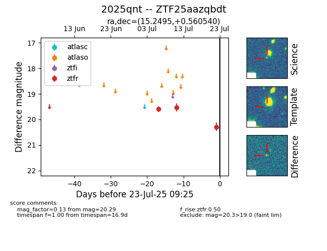

Target ZTF25aazqbdt at 2025-07-23 11:48, see:
FINK: fink-portal.org/ZTF25aazqbdt
Lasair: lasair-ztf.lsst.ac.uk/objects/ZTF25aazqbdt
ALeRCE: alerce.online/object/ZTF25aazqbdt
TNS: wis-tns.org/object/2025qnt
YSE: ziggy.ucolick.org/yse/transient_detail/2025qnt
alt names
ZTF25aazqbdt (ztf,fink)
2025qnt (tns,yse)
coordinates:
equatorial (ra, dec) = (15.2495,+0.56054)
galactic (l, b) = (128.0644,-62.21590)
photometry
last ztfr=20.29
3 ztfr detections
